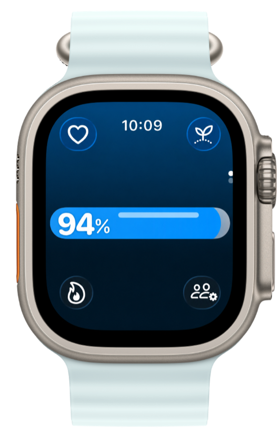
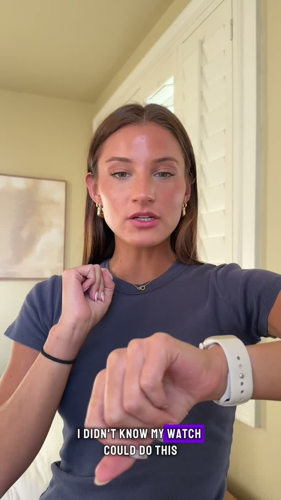
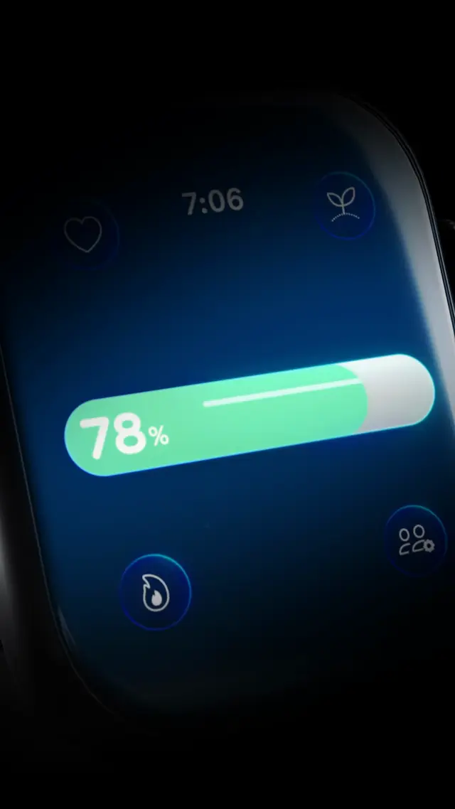

Real Life Health Bar
Your Apple Watch health stats as one simple, video-game-style health bar.
Free · works with the Apple Watch you already own


30 seconds — see it on a real wrist

See at a glance if you're fresh and ready to work out, or mid-workout and running low.
Helped me easily see where my body is at while running.
App Store review · ★★★★★
Simplify your health.
Free · works with the Apple Watch you already own